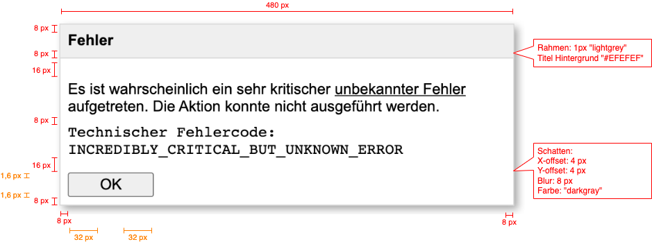

BCxP Client Community - CSS Basics Hands-On
Lernziele dieser Hands-On Session:
- Die Lernenden verstehen das CSS Box Model.
- Den Lernenden ist der Unterschied zwischen Block und Inline Elementen klar.
- Den Lernenden ist der Unterschied zwischen intrinsic und extrinsic sizing bekannt.
Aufgabenstellung
Paul ist ein junger Software-Entwickler bei BCxP und bittet euch bei seiner Userstory zum Thema "Fehlerdialog" um Hilfe.
Bei der Umsetzung der Anforderungen ist etwas schief gelaufen. Bitte helft Paul.
Userstory-0815: Fehlerdialog
Als Benutzer des Clients möchte ich im Fehlerfall einen Modal-Dialog angezeigt bekommen, der mir eine menschenlesbare Fehlermeldung anzeigt.
Der Fehlerdialog besteht aus einem Titel mit dem Inhalt "Fehler", einer Beschreibung mit der menschenlesbaren Fehlermeldung und
für einen besseren Support außerdem der technische Fehlercode, sowie einem "OK"-Button zum Schließen des Dialogs.
Akzeptanzkriterien:
- Die Schriftart ist Arial mit der Schriftgröße 16px.
- Der Dialog ist 480px breit.
- Der technische Fehlercode soll mit einer Monospace Schriftart abgehoben werden.
- Der Fehlerdialog soll folgendem Mockup genügen: 